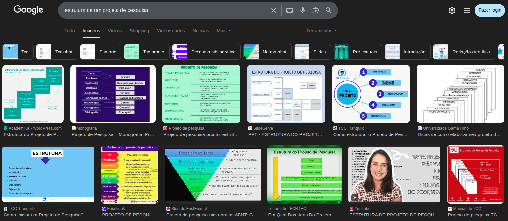
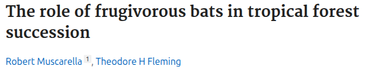
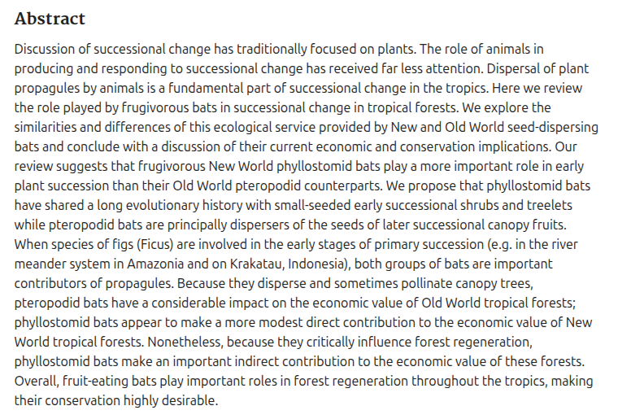
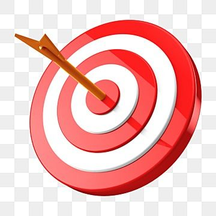
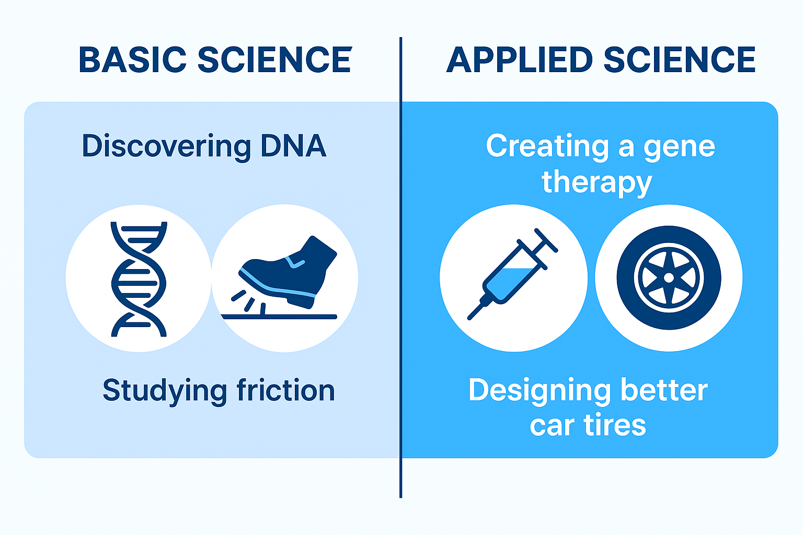
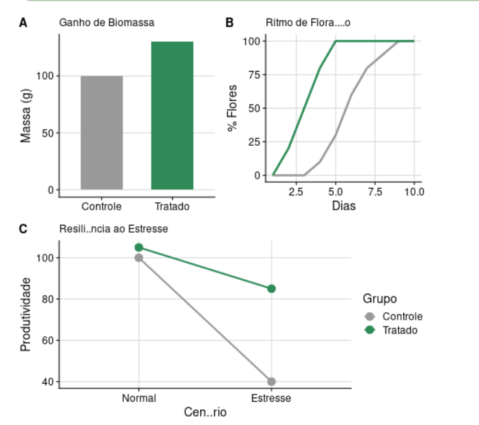

Aula 4: Delineamento de um Projeto de Pesquisa
PPGBV - UFPE
Introdução
- Foco: Estrutura de um Projeto
- Componentes estruturais e sua aplicação
- Habiliade de planejamento

Estrutura de um Proejto de Pesquisa
Tutorial é bóia

Título
- Conciso
- Objetivo
- Criativo
- Chamativo
- Honesto
Leia este post

Avalie estes títulos
Human-wildlife conflicts in Brazil: Navigating through shared and spared landscapes
Roads imperil South American protected areas
Effects of human activities on zooplankton biodiversity in aquatic systems across three vegetation domains: A landscape analysis approach
A Comparison of Immune Function and Physiological Stress in Three Populations of the Southwestern Snake-Necked Turtle (Chelodina oblonga) Along an Urbanisation Gradient
Sintaxe de um título
- Verbos:
- troque “muda” e “afeta” por “aumenta” ou “prejudica”
- Efeitos causadores
- “Efeitos de A sobre B…” em vez de “Relação entre A e B”
- Indexação geográfica excessiva
- “Na Caatinga de Sergipe” por “Florestas secas do Brasil”
- Palavras-chave
- São as principais do projeto, escolha bem!!!
Um treino rápido
Reescreva este título usando estas recomendações
Ecological Strategies of Trees Across Diverse Riparian Forests Along the Tropical Rio Doce, Brazil
Um treino rápido
Reescreva O SEU título usando estas recomendações
Resumo
- É o passo seguinte da leitura (não da escrita)
- Captura o leitor ou o afasta
- É um eerćicio de objetividade poderoso
- Tem método
Um bom resumo


Vamos treinar
Escreva um resumo de seu projeto em 100 apalvras
Palavras-chave
- Não podem repetir-se no título
- Precisam direcionar a busca por artigos
- Abrangente mas objetiva
Existem ferramentas online
Introdução
A analogia do funil
- Do amplo ao específico
- Da Teoria ao Experimento
- Da lacuna científica è hipótese

Planeje cada paraǵrafo
[Tópico Frasal] A desigualdade educacional é um entrave significativo para o desenvolvimento do Brasil.[Desenvolvimento] Segundo o sociólogo Zygmunt Bauman, a educação é um direito de todos, porém, no contexto brasileiro, o acesso à educação de qualidade ainda é restrito, especialmente em áreas rurais, onde a infraestrutura é precária. [Conclusão/Desfecho] Portanto, a falta de oportunidades iguais limita o crescimento social desses indivíduos.
Faça um mapa mental

Objetivos
SMART
- Simples
- Mensurável
- Alcançável
- Relevante
- Temporalmente determinado

| O que você quer alcançar? | Quais verbos você pode usar? |
|---|---|
| Adquirir conhecimento / compreensão | Identificar, Medir, Determinar, Descrever, Comparar, Avaliar |
| Explorar ou testar uma teoria | Medir, Testar, Calcular, Determinar, Investigar, Descobrir, Demonstrar, Examinar |
| Analisar ou conectar dados / pesquisas / teorias existentes | Examinar, Contrastar, Analisar, Relacionar, Comparar, Determinar |
| Avaliar ou comparar resultados e dados | Explicar, Analisar, Examinar, Interpretar, Medir, Diferenciar, Determinar |
Vamos treinar
Justificativa
1 - O problema é relevante?
2 - Existe uma lacuna real no conhecimento?
3 - Sua pesquisa é necessária — teoricamente e na prática — em escala local e global?
Fundamentação teórica (o que ainda não sabemos?)
Inclua:
Principais teorias que explicam o fenômeno
Avanços recentes na literatura
Limitações, controvérsias ou inconsistências
O que ainda não foi investigado (lacuna clara)
Perguntas-chave
Onde a literatura diverge?
Que contexto ainda não foi explorado?
Que abordagem metodológica ainda não foi aplicada?
Relevância prática
Explique:
Quem será afetado pelos resultados?
Que decisões podem ser melhoradas?
Que políticas podem ser aprimoradas?
Que inovação pode surgir?

Conexão entre teoria e prática
Mostre que:
A teoria ajuda a entender o problema real
O contexto empírico desafia ou expande a teoria
Seu estudo pode refinar modelos existentes ou propor novos
Use frases como:
“Ao investigar X no contexto Y, este estudo contribui para…”
“Este projeto testa os limites da teoria Z em ambientes emergentes…”
“Os resultados podem redefinir a compreensão de…”
Vamos treinar
Hipótese
| Aspecto | Hipótese Científica | Hipótese Estatística |
|---|---|---|
| O que é? | Explicação teórica | Teste matemático |
| Linguagem | Palavras (Causa/Efeito) | Números e Símbolos |
| Foco | O fenômeno | Os dados |
| Exemplo | “Luz afeta o crescimento” | \(H_0: \mu_1 = \mu_2\) |
Aplicação Prática
- Científica: Orienta o desenho do experimento e a teoria.
- Estatística: Decide se os resultados são fruto do acaso (valor de p).
Gere suas hipóteses
Resultados esperados
- Contribuição Teórica: Validação da relação entre [Variável A] e [Variável B].
- Impacto Prático: Desenvolvimento de um protocolo otimizado para [Problema X].
- Difusão do Conhecimento: Publicação de artigo em periódico qualificado e apresentação em congresso nacional.
- Formação de Recursos Humanos: Treinamento de alunos de iniciação científica na metodologia proposta.
Predições (O que esperamos observar)
- Se o fertilizante X for eficaz (Hipótese),
- Então o grupo tratado apresentará:
- Um aumento de 30% na biomassa foliar
- Floração antecipada em comparação ao grupo controle
- Maior resistência ao estresse hídrico
dica: USE GRÀFICOS!!!

Métodos
- Delineamento: Definição da natureza do estudo (experimental, observacional ou computacional).
- Sistema de Estudo: Especificação exata da população, banco de dados ou linhagem biológica.
- Protocolos: Descrição técnica e sequencial da coleta de dados.
- Análise de Dados: Plano detalhado de como os dados serão processados e testados.
Escrita objetiva
- Direcionalidade: Use frases diretas e justifique por que o método escolhido é o mais adequado.
- Visualização: Priorize fluxogramas para demonstrar a visão macro do processo.
- Precisão Técnica: Substitua termos genéricos por ferramentas e testes específicos (ex: “ANOVA” em vez de “estatística”).
- Replicabilidade: Escreva de modo que outro pesquisador consiga reproduzir seu desenho experimental.
Faça um fluxograma de seus métidos
Cronograma

Cronograma de “marcos”

Seja criativo
Conclusão
- Manejar UM projeto de PG é só o começo da vida acadêmica
- Não se desespere… vai piorar… e muito
- Leve a sério, mas com leveza
- Você agora recebe um salário para fazer PG